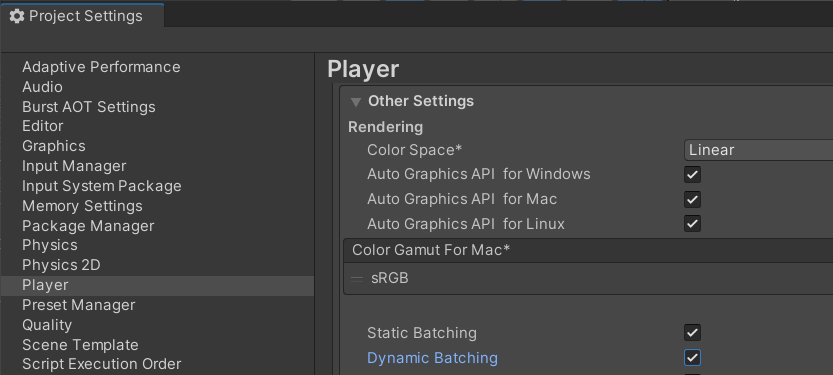
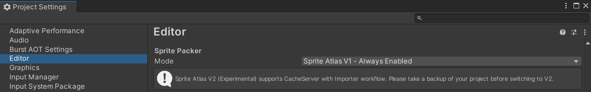
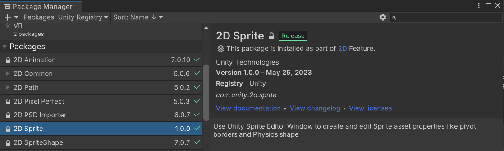
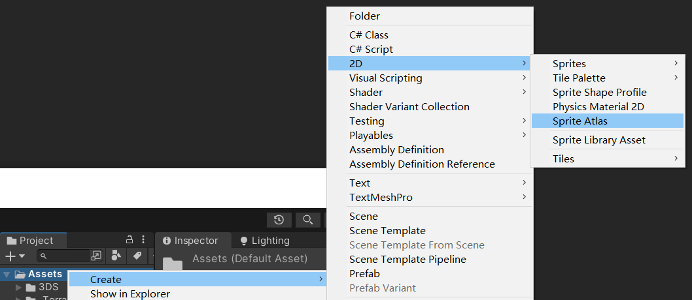
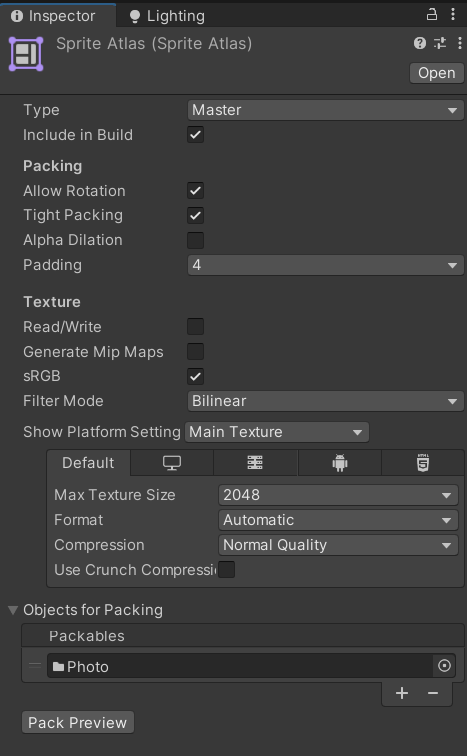
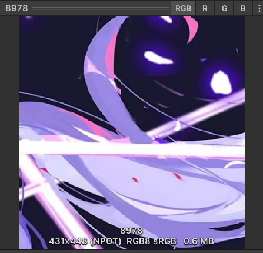
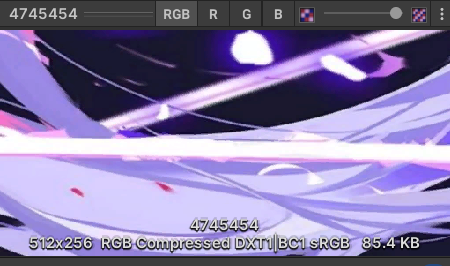

# 性能优化
性能优化是指通过改进软件、系统或者代码的设计与实现，使其在执行过程中达到更高的运行效率和更低的资源消耗。性能优化旨在提升程序的响应速度、吞吐量、资源利用率以及用户体验。
性能优化涉及多个方面，包括但不限于以下几个方面：
- 算法优化：选择更高效的算法或者数据结构，减少计算量和存储空间的使用。
- 代码优化：改进代码的执行效率和资源利用，例如减少循环次数、消除冗余计算、合理使用缓存等。
- 并发优化：充分利用多核处理器和并发编程技术，提高程序的并发处理能力，减少资源竞争和延迟。
- IO 优化：减少磁盘、网络和其他 IO 操作对性能的影响，采用缓存、异步 IO、批量处理等技术来提升效率。
- 数据库优化：优化数据库结构、索引设计、查询语句等，提高数据库操作的性能。
- 编译优化：对代码进行编译优化，通过改变程序的执行顺序、内存布局等，提高代码在特定平台上的运行效率。
- 资源管理：合理管理系统资源，如内存、线程、连接池等，避免资源耗尽或者资源浪费。
- 前端性能优化：优化前端网页加载速度和渲染效果，减少网络请求、压缩资源、使用缓存等。
Unity 性能优化：
- 批处理优化：尽量减少绘制调用和状态更改，通过合并对象渲染以减少批处理次数。例如，将多个对象合并成一个网格或使用对象池来避免频繁的资源创建和销毁。
- 纹理和材质优化：使用适当的纹理压缩格式，避免不必要的高分辨率纹理使用。使用纹理压缩格式，如 ETC2、ASTC 或 DXT，以减少内存消耗和加载时间。对于材质，避免过度复杂的着色器和纹理混合，只使用必要的纹理和着色特效。
- 碰撞检测和物理优化：合理使用物理引擎，并使用合适的碰撞体形状和触发器来减少不必要的碰撞检测。对于复杂的物理模拟，可以考虑使用近似算法或使用对象池。
- 脚本优化：优化脚本的性能，避免在 Update 等频繁调用的函数中进行昂贵的计算和对象分配。使用对象池、缓存计算结果以及避免频繁的字符串操作等技术可以提高性能。
- 空间分区和剔除：使用空间分区技术（如四叉树、网格切割等）来减少不必要的渲染和碰撞检测。使用遮挡剔除技术（如视锥剔除）来避免渲染不可见的物体。
- 优化资源加载：合理使用资源加载和卸载技术，避免在游戏运行时频繁加载和卸载大量资源。使用异步加载和资源缓存可以改善游戏的加载性能。
- 移动平台优化：针对移动平台的性能限制进行优化，如减少三角形数量、使用虚拟纹理、避免过多的特效等。
性能优化是一个持续的过程，需要通过测试和分析来找到瓶颈和改进点。以上只是一些一般性的指导原则，具体的优化方法可能会因项目需求而有所不同。
# 绘制调用（Draw Call）
CPU 准备数据 -- 调用 --> 图形学 API -- 调用 --> GPU 渲染
CPU 准备数据 -- 调用 --> 图形学 API 的过程称之为一个 Draw Call
绘制调用是指将一批顶点数据发送给图形 API 进行绘制的操作。每个绘制调用都会产生一次 CPU 到 GPU 的数据传输以及绘制命令的开销。
# 批次（Batches）
每个批次可能对应多个绘制调用。在渲染图形时，Unity 会尽可能将相似的物体一次性绘制在一起，这样可以减少图形 API 的调用次数，提高渲染效率。这种将多个物体合并为一次绘制的过程就称为批次。
# 批处理技术
批处理技术用于优化渲染性能，通过减少渲染调用的次数来提高游戏的运行效率。CPU 每次调用渲染前都需要准备大量的数据（除了物体本身的数据以外，还有很多额外的操作），多次重复这一过程会带来很大的性能消耗，所以，将一些物体合并到一起处理，然后再调用渲染，这样就会提高效率。
大多数情况下，批处理只会处理摄像机可见的内容（摄像机看不到的内容不会渲染）
Skinned Mesh Renderer 组件用于渲染具有骨骼动画或形变的模型，如角色模型。由于骨骼动画需要对模型的顶点和骨骼进行实时计算，这就导致了每个模型的顶点数据是动态变化的，无法进行批处理优化。
以下是 Unity 中常用的批处理技术：
- 静态批处理（Static Batching）：静态批处理适用于不会发生变化的静态游戏对象，如静态环境物体、地形等。Unity 会自动将静态的游戏对象合并为一个渲染批次，以减少渲染调用次数，提高性能。
- 动态批处理（Dynamic Batching）：动态批处理适用于在运行时发生变化的游戏对象，如移动的敌人、玩家角色等。Unity 会自动将动态的游戏对象进行合并，减少渲染调用次数。动态批处理要求合并的游戏对象使用相同的材质和渲染设置，并且不超过 GPU 的限制。
- GPU 实例化（GPU Instancing）：GPU 实例化可以用于同时渲染多个相似但独立的游戏对象，如草地、树木等。通过复制并共享网格数据，可以减少渲染状态的切换，提高性能。GPU 实例化要求使用支持它的着色器。
开启批处理：

# 静态批处理（Static Batching）
- 动态物体不能参与静态批处理
- 只有 Mesh Renderer 支持批处理
- 物体的变换（位置、旋转、缩放）需要相近
- 物体的网格可以不同
- 材质球没有 pass 数量限制
- 使用相同的材质球会进行批处理。使用不同的材质球也会进行批处理，但是材质球的不同会导致多增加几个批次（总批次数量仍然小于完全相同的动态物体）
- 模型没有顶点数量限制
# 动态批处理（Dynamic Batching）
- 静态物体不能参与动态批处理
- 只有 Mesh Renderer 支持批处理
- 物体的变换（位置、旋转、缩放）需要相近
- 物体的网格必须相同
- 使用相同的只有一个 pass 的材质球
- 不同的版本和不同的渲染管线有不同的模型的顶点数量限制。
例：在 2021.3 版本中，内置渲染管线，模型的顶点数在 225 个（包含 255）以内，添加多个同样的模型，不会增加渲染批次 - 如果模型的顶点数量超过了动态批处理的限制，可以将模型拆分成多个不超过限制的模型
# 不同的几何体增加的渲染批次数量的差异
在只有一个光源的条件下，不同的几何体（如 Unity 内置的 Sphere 和 Cube）增加的渲染批次数量是不同的。
主要有下几个因素：
- 顶点数量：不同几何体的顶点数量不同。更多的顶点数量意味着需要进行更多的渲染操作，从而增加了批次数量。例如，如果一个物体的网格细分的比较细，那么它的顶点数量就会更多。
- 三角形数量：除了顶点数量外，三角形数量也会对批次数量产生影响。不同几何体的三角形数量可能不同，这取决于其形状和细分程度。更多的三角形数量会导致更多的渲染操作和批次增加。
- 材质属性：不同几何体使用的材质属性可能不同，比如漫反射贴图（Diffuse Map）、法线贴图（Normal Map）等。如果两个几何体使用了不同的材质属性，那么它们可能会被分配到不同的渲染批次中。
# 遮挡剔除 (Occlusion culling)
Unity 中的遮挡剔除（Occlusion Culling）是一种用于优化渲染性能的技术。它通过在渲染场景之前检测和剔除被其他物体遮挡的不可见物体，减少了需要进行渲染的对象数量，从而提高了帧率。遮挡剔除的基本原理是通过在场景中放置一些特殊的相机，这些相机会从主相机的视角来看，检测到哪些物体被其他物体遮挡住了。然后，根据这些信息，引擎会计算出需要进行渲染的物体，并将其发送给图形渲染管线。
Unity 提供了两种类型的遮挡剔除技术：
- 静态遮挡剔除：适用于不会发生位置变化的静态物体。在编辑器中，你可以手动标记哪些物体是静态的，并使用静态遮挡剔除来进行优化。Unity 会在运行时计算静态物体之间的遮挡关系，并根据这些关系进行剔除。
- 动态遮挡剔除：适用于会发生位置变化的动态物体。Unity 使用一种基于 CPU 的算法来动态计算遮挡关系，并根据需要进行剔除。这种方法对于大规模的开放世界游戏非常有用。
在 Unity 的渲染管线中，遮挡剔除通常发生在几何阶段。具体来说，它发生在几何阶段中的裁剪阶段中的视图剔除（View Frustum Culling）之后，摄像机空间剔除（Camera Space Culling）之前。
- 视图剔除（View Frustum Culling）：在这个阶段，引擎会排除所有在摄像机视锥体范围外的物体，以减少不必要的渲染开销。
- 遮挡剔除：一旦视图剔除完成，引擎会执行遮挡剔除技术，以确定哪些物体被其他物体遮挡，从而决定在渲染过程中是否需要对它们进行渲染。
- 摄像机空间剔除（Camera Space Culling）：在遮挡剔除之后，引擎会执行摄像机空间剔除，进一步排除那些在摄像机空间范围外的物体。
这些剔除阶段的目的都是为了尽量减少需要进行渲染的物体数量，从而提高渲染性能和帧率。遮挡剔除在此过程中起着非常重要的作用，可以有效地减少不可见物体的渲染开销，提高游戏的性能表现。
# LOD（Level of Detail）
是一种在 Unity 中用于优化渲染性能的技术。它通过根据物体的距离和大小动态地切换不同级别的细节模型来减少绘制的三角形数量和纹理使用，从而提高游戏的性能。因此，它会以内存为代价来优化渲染
LOD 系统通常与静态网格渲染器（Static Mesh Renderer）一起使用。它通过创建一系列不同细节级别的网格模型，并将它们关联到同一个物体上的不同 LOD 组件中。这些 LOD 组件根据相机与物体之间的距离选择性地显示适当级别的细节。
通常，当物体离相机较远时，较低级别的细节模型会被渲染，以减少绘制的三角形数量和纹理使用。当物体靠近相机时，逐渐切换到更高级别的细节模型，以提供更多的细节和质量。
Unity 提供了内置的 LOD 系统，同时还支持第三方插件和脚本，可以通过简单设置和编辑器操作来实现 LOD 的创建和管理。
# GPU Skinning
GPU 蒙皮是将骨骼动画的计算工作从 CPU 转移到 GPU 进行计算的方法，通过减少 CPU 负载，可以支持更多的动画物体，并提高渲染性能。
# 灯光烘焙
灯光烘焙是将场景中的静态灯光（如热气球照明、天空盒照明等）以及静态物体的阴影预计算并存储在纹理中，并在运行时将该纹理应用到场景的物体上，这样在运行时就不需要在每个帧中动态计算光照，从而减少了渲染调用，提高渲染性能和运行时效率。
灯光烘焙可以减少渲染场景时的 Draw Call 数量，参与灯光烘焙（Lightmapping）的物体仍然会参与批处理（Batching）
注意，灯光烘焙适用于静态场景或静态物体，对于动态变化的物体或动态光源（如移动的角色或动态光源），灯光烘焙效果不会生效，仍然需要实时计算和渲染。因此，在设计场景时，需要根据场景的要求和性能需求来选择使用灯光烘焙。
# Unity 支持的 3DMax 材质球类型和动画类型
材质球类型包括：
- standard (标准材质)
- Multi/sub-object (多维子材质)，需要注意每个子材质必须是标准材质。
无灯光条件下，多维子材质中的子材质的数量就是 unity 中的渲染批次增加的数量，有灯光的条件下，渲染批次会更多。
动画类型包括：
- 关键帧动画
- 骨骼动画
- CAT 插件
- 任意动画类型 -> 点缓存 -> 关键帧动画
# 图片
图片导入到 Unity 中，原图片与 Unity 中的图片分辨率不一样，因为 Unity 会将图片更改到 2^n（n>=1）的大小（不会超过自定义的最大值）。对于 sprite 图片，Unity 不会改变图片的大小，因为可以图集打包。
纹理、sprite 图片等资源会加载到显存中，如果显存不够用，就会占用内存。
# 图集打包
图集打包可以将 sprite 图片进行分类合并，会得到一个或多个图片集（一个图片集实际上就是一张图片），一个图片集只需要处理一次即可。相对于多个 sprite 图片进行单独处理，图集打包能够有效的降低 DrawCall 的数量。
.spriteatlas 文件是一种用于打包和管理精灵图集的文件格式，它包含了以下信息：
- 精灵图集的纹理信息：.spriteatlas 文件包含指向精灵图集纹理的引用。这些纹理可以是单个图片或多张图片组成的图集，它们通常被打包为一个纹理。
- 精灵信息：.spriteatlas 文件记录了精灵图集中每个精灵的名称、UV 坐标、边界框和其他属性信息。这些信息描述了如何从纹理中提取出单个精灵图像，并可以在游戏或应用程序中使用。
- 压缩和打包设置：.spriteatlas 文件可以包含有关精灵图集的压缩和打包设置的信息。例如，它可以指定要使用的纹理压缩格式、图集的最大尺寸限制、是否启用 mipmaps 等选项。
- 平台特定信息：.spriteatlas 文件还可以包含特定于目标平台的设置和优化信息。例如，对于不同的平台和设备，可以根据其性能和资源需求，设置不同的最大尺寸或压缩格式。
# 开启图集打包
默认是不开启的。
需要在 Edit -> Project Settings -> Editor 设置中，将 SpritePacker 的 Mode 修改为 Always Enabled（总是启用）或者 Enabled For Builds（在构建时启用）

在 Package Manager 中，找到 2D Sprite 包并导入

# 图集的创建和设置

可以在 Objects for Packing 中添加图片和文件夹，Unity 会自动分类并打包

其它的设置可以去看官方文档
# 图集的使用
正常使用原图片即可，也可以用代码调用。
public Image img; | |
void Start() | |
{ | |
SpriteAtlas atlas = AssetDatabase.LoadAssetAtPath<SpriteAtlas>("Assets/Atlas/MyAtlas.spriteatlas"); | |
img.sprite = atlas.GetSprite("Fall1"); | |
} |
# sprite 图片

- 431x448 (NPOT)：431x448 是分辨率，NPOT 则代表非 2 的幂次方（Non-Power-Of-Two）
- 0.6MB 表示图片在显存中的占用
- 431x448 (NPOT) 与 0.6MB 之间的数据表示压缩方式，需要根据不同的平台做选择
- RGB8 是一种图像表示格式
- sRGB 是一种标准的 RGB 颜色空间
# 纹理图片

- RGB compressed DXT1|BC1 sRGB：使用 RGB compressed DXT1 或 BC1 sRGB
- 其他的属性与 sprite 图片相同
# RGB compressed DXT1/DXT5 和 BC1 sRGB
RGB compressed DXT1/DXT5
- RGB compressed DXT1（RGB 压缩的 DXT1）是一种图像压缩格式，使用 DXT 压缩算法对红色 (R)、绿色 (G)、蓝色 (B) 通道进行压缩。DXT1 是一种基于颜色块的压缩算法，常用于实时计算机图形和游戏开发中。
- RGB compressed DXT1（也称为 BC1）压缩格式只支持颜色通道，不包含透明度信息。相对于 RGB compressed DXT5，它提供较低的压缩比和较低的图像质量。因此，它适用于不需要透明度信息的纹理，如大部分的颜色贴图、环境贴图等。
- RGB compressed DXT5（也称为 BC3）压缩格式支持颜色和透明度通道，因此适用于包含透明度信息的纹理。它提供更高的压缩比和更高的图像质量，因为它使用更复杂的压缩算法来保持透明度通道的准确性。这使得 RGB compressed DXT5 适用于需要保留更多细节和精确度的纹理，如包含透明度的角色纹理、粒子纹理等。
BC1 sRGB
- BC1 sRGB 是一种基于颜色块的压缩格式，用于纹理压缩和图形渲染。BC1 是 DirectX 中的一种标准压缩格式，也被称为 DXT1。通过结合颜色压缩和 sRGB 颜色空间，BC1 sRGB 可以在保持图像质量的同时降低资源消耗和提高渲染性能。
- BC1 sRGB 使用与 BC1 相同的压缩算法。然而，与普通的 BC1 相比，BC1 sRGB 在颜色解码时会先将颜色转换到 sRGB 颜色空间，以提供更准确的颜色表示。
- sRGB 颜色空间是一种广泛用于显示设备的标准颜色空间，通过对每个颜色通道进行非线性调整，提供更好的亮度和颜色映射。sRGB 颜色空间可以提供更准确、更逼真的颜色表示。
# AssetBundle
详细内容请看官方文档
Unity 的 AssetBundle（资源包）是一种用于打包和加载 Unity 项目中资产（Assets）的文件格式。它允许您将游戏中的资源（包括模型、纹理、声音、脚本等）打包成一个独立的文件，然后在运行时动态加载到游戏中。
AssetBundle 可以表示彼此之间的依赖关系。例如，一个 AssetBundle 中的材质可以引用另一个 AssetBundle 中的纹理。为了提高通过网络传输的效率，可以根据用例要求（LZMA 和 LZ4）选用内置算法选择来压缩 AssetBundle。
AssetBundle 可用于可下载内容（DLC），减小初始安装大小，加载针对最终用户平台优化的资源，以及减轻运行时内存压力。还可以将游戏的不同部分分开打包，例如将关卡资源和角色资源分别打包成不同的 AssetBundle，这样可以有效地管理和更新资产。此外，AssetBundle 还支持资源的版本控制和差异更新，可以减小游戏的安装包大小和网络带宽使用。
在 Unity 中，可以使用 AssetBundle API 来创建、加载和卸载 AssetBundle。您可以选择将 AssetBundle 保存在本地设备上，也可以将其上传到远程服务器供下载。无论是本地加载还是从远程服务器下载，Unity 都提供了简单易用的 API 来加载和使用 AssetBundle 中的资源。